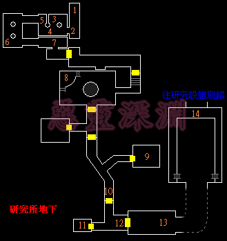
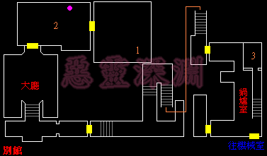

|
惡靈古堡～惡靈古堡４----地圖攻略～5-2
|
|
攻略內容以Normal為主，地圖上的紫色圓點●表示高價寶物的位置 ，標綠色的道具則是過關必須的重要道具。
從監禁室開始本章節。除了一些道具之外，還會接收到從窗外飛進來的 Ada 的紙飛機。 帶著Ashley往回跑，目的地是垃圾處理場，但是回程的路上會重新配置許多士兵。在編號13的房間，有個士兵將門關上了，當Leon 去打開門的開關時，有一群士兵出現，其中還有持弓的士兵，由於房間中央有張大桌子，很容易會面臨兩面夾攻的狀態，最好用散 彈槍速戰速決，或用機關槍先將持弓的士兵擊倒，以免Ashley有危險。 到垃圾處理場時，Leon會帶著Ashley從編號6的垃圾處理口跳下去。
 垃圾處理口落下的地方是研究所地下的編號1位置，拉下編號2的手把打開鐵柵，躺在後方編號1的鐵處女就會甦醒，通過鐵柵後趕 緊拉手把讓鐵柵落下，把鐵處女阻隔開，再用裝上測溫狙擊鏡的狙擊槍慢慢解決牠，位於鐵處女背後的疫生獸，可以使用手榴彈等 武器，不過小心反彈鐵柵炸到自己；或是將鐵處女的腳打斷，使牠仆倒在地；不然就先讓Ashley躲入編號3的鐵箱中，然後打開鐵柵 用紅色油桶攻擊。不想拿道具的玩家，直接離開不打也可 ，但是要特別小心，柵欄只能阻隔20秒左右，小心打下一隻時會被前後夾 攻。 在編號5有個可推動的鐵箱，需要Leon和Ashley一起才能推動，在兩人一起行動的狀態下，Leon在推鐵箱時，Ashley會主動幫忙。 此時有另一隻鐵處女從編號7的地方過來，利用編號6的油桶，或是等牠來到編號4的鐵柵，再用以上方式打倒，打倒有20000ptas。 推開編號7位置的鐵箱繼續往前，到達中央吊掛著一個大鐵球的房間，一跳下去後就出現一大堆敵人，一定要好好帶著Ashley，這裡 會從各處出現敵兵。由於繼續前進的門被封住了，所以必須操作大鐵球來擊碎擋路的水泥牆，開關就在編號8的位置，調查開關後 選擇讓Ashley來操作，在水泥牆被破壞之前，Leon要小心從兩邊而來的敵人，必要時就用閃光彈爭取時間。 若是無法兼顧兩邊來的 敵人，也可以選擇讓Leon來操作，每操作一次，就實行打帶跑戰術。 在撞擊三次之後，水泥牆被擊碎，即可前進。 來到一個通道上，正前方的鐵捲門稍等一會會自動打開，後面出現再生者，旁支的房間都有道具，可以前去回收。往前還有一隻再 生者，保持距離戰鬥。這裡的兩隻再生者都會掉落5000ptas，想賺錢的話就不要錯過了。 在編號10會發現路被擋住了，要先到編號9的房間打開牆上的開關，然後回到編號10，讓Ashley先鑽過去開門。 編號11處進行裝備整理，或在此存檔。在編號12的門前左右有兩個開關，讓Ashley留在一個開關前，使Leon去調查另一個開關，此時 門上方會從左右兩邊開始亮燈，當燈到達正中央時按下指示鍵即可打開門。 編號13的房間有輛卡車，回收道具後，爬上車，Ashley會自願駕駛，Leon的任務就是在車輛前進時保護雙方的安全，Leon的建議位置 是站在Ashley的正後方，和她背靠著背，或是在邊角。 車子行進時，車後方會有很多士兵追上來，並跳上車，可以趁他們跳時攻擊，使他們無法上車，想收集道具就讓他們跳上車後再解 決。除了敵人之外，途中會有著火的卡車兩度從後面衝過來， 第一次只要攻擊到車頭著火即可，第二次則須讓車頭冒更大的火，否 則車子撞上來翻覆，會壓到Leon。
後來因為路被擋住而停下來，Leon必須去編號14的地方打開開關車子才能繼續前進，附近也有一些道具，只需小心敵人去攻擊 Ashley，當Ashley在駕駛座上時，敵人會直接攻擊她，而不會把她抓走。 建議讓Leon爬上梯子後立刻跳下解決引發的敵人（約四人） ，再去打開開關。Leon回到車上後，車子繼續前進，如果往車子行進方向的上方看，可以見到有士兵，這些士兵待會都會跳上車， 先射擊讓他們掉下去，會省下很多麻煩。
當車子中途被門阻擋暫停時，就要趕快解決殘留在車上的敵人，門打開，聽到Ashley的呼 喊聲，車子前方出現迎面而來的衝撞卡車，把握時間攻擊。通過衝撞卡車後，車子便失控撞進研究設施別館。
 兩人從別館編號1的地方開始，這個凌亂不堪的房間並沒有什麼特別，前進編號2的房間。 編號2的房間有高價寶物審判の光＿緑（審判之光＿綠）、武器商人，另有5000ptas。到大廳後本章節就結束了。
疑難解答
組合──金的聖貓像＋信義之光＿紅 ＋審判之光＿綠＝金の聖猫像＋α＋β（金的聖貓像αβ） 25000ptas 未經許可禁止轉載連結 |
惡靈深淵Biohazard Abyss http://98.to/coolbio